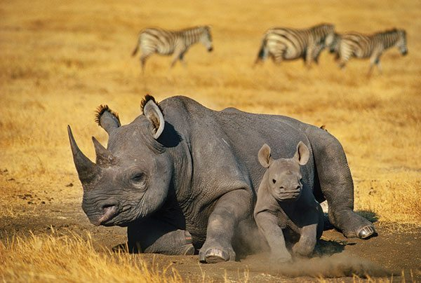

Quick Facts:
- Family name: Rhinocerotidae
- Classification: Mammal
- Weight: 500kg -2,500kg
- Body length: 2.5m-4m long
- Top speed: 55km/hour
- Diet: Herbivore
Habitat: grassy plains, rainforests and swamps.
Details about rhinos:
- Our planet is home to five species of rhinoceros – the black rhino and the white rhino, which live in Africa, and the Sumatran, Javan and Indian (or greater one-horned) rhino, which inhabit the tropical forests and swamps of Asia.
- These brilliant beasts are known for their awesome, giant horns that grow from their snouts – hence the name “rhinoceros’, meaning “nose horn”. Javan and Indian rhinos have one horn, where as the white, black and Sumatran rhinos have two.
- These incredible creatures are some of the biggest animals in world! The largest of the five species is the white rhino, which can grow to 1.8m tall and and weigh a massive 2,500kg – that’s the weight of 30 men!
- Despite their huge size and strength, these bulky beasts don’t prey on other animals for food. They’re herbivores, and instead like to munch on lots of grass and plants at night, dawn and dusk.
- During the heat of the day, these magnificent mammals can be found sleeping in the shade or wallowing in muddy pools to cool off. They love to get mucky, in fact! Mud protects their skin from the strong sun (like a natural sunblock) and wards off biting bugs, too.
- For the most part, rhinoceroses are solitary animals and like to avoid each other. But some species, particularly the white rhino, may live in a group, known as a ‘crash’. These crashes are usually made up of a female and her calves, although sometimes adult females (called cows) can be seen together, too.
- Males (called ‘bulls’), on the other hand, like to be left alone, unless in search of a female to breed with. They’re very territorial, too, and mark out their area of land with, believe it or not, poop! In fact, rhinos often use pongy piles to communicate with each other, since each individual’s dung smells unique.
- They may rarely hang out with each other, but they spend a lot of time with their feathered friends! Rhinos are often seen with Oxpeckers (or ‘tick birds’) perched on their back, which live off the pesky parasitic insects living in the rhino’s thick skin. The birds’ loud cries also help alert their big buddies of potential danger, too!
- Because of their huge bodies, strong horns and thick, armour-like skin, rhinos have no natural predators. Nevertheless, these brilliant beasts get frightened easily! When they feel threatened, they’re instinct is to charge directly at whatever has spooked them – whether it be another animal or a harmless object!
- Sadly, it’s estimated that there are only around 29,000 rhinos left in the wild, compared to 500,000 at the beginning of the 20th century. The main threat to these beautiful animals is illegal hunting, largely because their horns are used in traditional folk medicine, particularly in Asia.